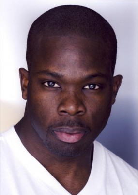
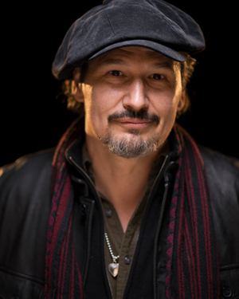

#9508 In the Cut - Wenn Liebe tötet
Alternativ: In the Cut


 IMDB-Wertung: 5.3 / 10
IMDB-Wertung: 5.3 / 10  Metascore: 0
Metascore: 0 
Frannie Avery is a New York City inner city high school English teacher, whose passion is collecting words and phrases that interest her, either because of their meaning and/or just because of the way they sound. The way that she and her paternal half sister Pauline Avery, her closest confidante, deal with men and sex has largely been affected by their father, who is working on marrying wife number five. Frannie thinks about sex more than she has it. Her lack of a sex life is further exacerbated by being the object of obsession of James Graham, a man with who she had a few casual dates and two sexual encounters, which has made her even more cautious. This complete experience is why she has a somewhat inappropriate, albeit non-sexual relationship with Cornelius Webb, one of her students. She eventually embarks on a sexual relationship with NYPD Homicide Detective Giovanni Malloy, who, along with his partner Detective Ritchie Rodriguez, are investigating the murder of a young woman, ...
Jahr: 2003
Dauer: 119 Minuten
FSK: 16
Land: England Studio: Senator FilmTonspuren: DTS - ,
Untertitel:
Auflösung: 1080p (1920x1032) Größe: 11264 MB
Genre: Thriller, Mystery
Regisseur: Jane Campion
Drehbuch: Jane Campion, Susanna Moore, Susanna Moore, Stavros Kazantzidis
Soundtrack: Hilmar Örn Hilmarsson
Darsteller:
 Jennifer Jason Leigh als Pauline
Jennifer Jason Leigh als Pauline- Meg Ryan als Frannie Avery
-  Sharrieff Pugh als Cornelius Webb
-  Nick Damici als Detective Ritchie Rodriguez
- Heather Litteer als Angela Sands
- Yaani King Mondschein als Frannie's Student
 Frank Harts als Frannie's Student
Frank Harts als Frannie's Student Sebastian Sozzi als Frannie's Student
Sebastian Sozzi als Frannie's Student- Zach Wegner als Frannie's Student
 Mark Ruffalo als Detective Giovanni A. Malloy
Mark Ruffalo als Detective Giovanni A. Malloy- Patrice O'Neal als Hector (Baby Doll Bouncer)
- Funda Duval als Baby Doll Bartender
- Nancy La Scala als Baby Doll Dancer
- Ami Goodheart als Baby Doll Dancer
 Michelle Hurst als Teacher at Frannie's School
Michelle Hurst als Teacher at Frannie's School- Sunrise Coigney als Frannie's Young Mother
- Jacinto Taras Riddick als Detective in Precinct
 Arthur J. Nascarella als Captain Crosley
Arthur J. Nascarella als Captain Crosley Kevin Bacon als John Graham (uncredited)
Kevin Bacon als John Graham (uncredited)- Michelle DiBenedetti als Street Walker (uncredited)
- Angela Frye als Bride in Subway (uncredited)
- Sein Gay als Patron #1 (uncredited)
- Chad Gilkison als Gay Punk (uncredited)
- Lou Martini Jr. als Sleazy Bar Patron (uncredited)
- Susan Trishel Monson als Subway Rider (uncredited)
- Michael Nuccio als Frannie's Young Father
- Allison Nega als Young Father's Fiancee
- Dominick Aries als Attentive Husband
- Susan Gardner als Perfect Wife
- Daniel T. Booth als Luther Wilker Red Turtle Bartender
- Theo Kogan als Baby Doll Bartender
- Sandy Vital als Baby Doll Dancer
- Sharon Riggins als Baby Doll Dancer
- Karen Riggins als Baby Doll Dancer
- Panicker Upendran als Taxi Driver
- Kendra Zimmerman als Cafe Waitress
- Hal Sherman als Forensic Detective
- Dana Lubotsky als Laundry Room Murder Witness
- James Firo als Detective Halloran
- Cordell Clyde als Informer
- Tim House als Baby Doll Bar Customer
- Julius LeFlore als Cursing Motorist
 Vinny Vella als Concerned Bystander
Vinny Vella als Concerned Bystander- Skippy D als Business Owner (uncredited)
- Michael Ienna als Larry (uncredited)
- Max Maxy als Coffee Clerk (uncredited)
- Macc Plaise als Patron (uncredited)
- Nicole Spruill als Girl at Bar (uncredited)
Datei: X:\2003(G-M)\In the Cut - Wenn Liebe tötet (2003, FSK16, 1920x1032).mkv seit 05.09.2018
Festplatte: HD 2003-2004-2005(A-F)
 Es gibt insgesamt 33 Filme in der Gruppe '2003(G-M)'
Es gibt insgesamt 33 Filme in der Gruppe '2003(G-M)'